12.深入了解你的Mac¶
到目前为止，你已经创建了三个不同的Mac应用程序：一个窗口应用程序、一个菜单栏应用程序和一个基于文档的应用程序。在本节中，你将创建另一个窗口应用程序，但有不同的目的。
你将深入到Mac的系统中，了解作为macOS一部分的命令行工具。你将学习更多关于使用终端的知识，以及如何使用Swift调用终端命令。
在该应用程序中，你将使用一个名为sips的终端命令，它代表scriptable image processing system。这是一个强大的工具，但很难记住其语法。创建一个图形化的用户界面将使它更容易使用。
终端命令¶
macOS和它的前身OS X都是建立在Unix之上的。Unix有一套广泛的命令，你可以从命令行中运行。这些命令大多是小型的、单一用途的实用程序，如果需要的话，你可以把它们连在一起。你已经在第1章"设计数据模型"中使用了这样的命令序列，在那里你对下载的JSON进行了格式化，使其更容易阅读。
这些命令是存储在秘密文件夹中的可执行文件，隐藏在你的Mac的文件系统深处，但现在你要找到它们。
打开Terminal。在Finder中，双击Applications/Utilities/Terminal.app，或者按Command-Space激活Spotlight，然后开始输入Terminal，直到该应用变得可选择。
在Terminal窗口中，输入这两条命令，每条命令后按Return：
cd /usr/bin
ls
cd命令改变目录到其中一个隐藏的文件夹。而ls则列出了其中的内容。这给了你一个巨大的你可以访问的命令列表。向后滚动查看你输入ls的位置，然后right-click它，选择Open man Page：
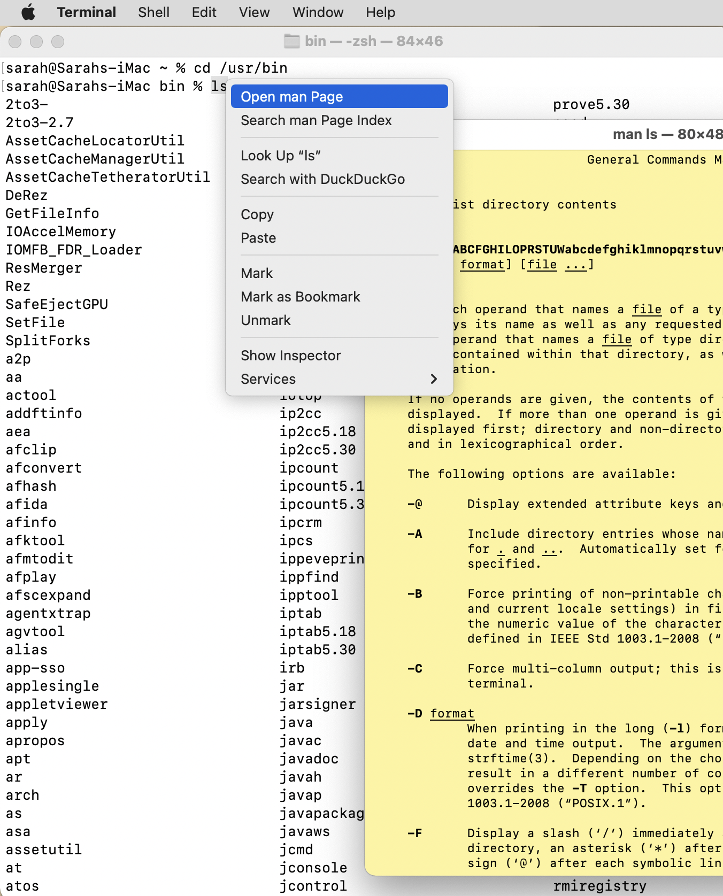
几乎每一个命令都有自己的man page，或称手册页，你可以通过阅读来了解该命令的作用和需要的参数。一些手册页，比如这个ls的手册页，甚至有例子，这可能是非常有用的。
终端使用man命令显示这些手册页。滚动浏览你列出的所有命令，找到man，然后right-click，显示其手册页面。
你也可以输入man man，在你的活动终端窗口中看到手册页。按Space来浏览这些页面，或者使用你的触控板或鼠标滚轮来滚动。按q退出，这将使手册页消失。
在其他文件夹中还有更多的命令，大部分在/usr/sbin和/bin中，但其他应用程序可能在其他地方存储命令。
Note
你可以用终端命令使你的系统无法使用。终端假设你知道你在做什么，并将允许你删除驱动器上的每一个文件或执行其他灾难性的操作。阅读手册页面，有一个良好的备份系统，不要使用你不理解的命令。
虽然iOS具有与macOS相同的Unix基础，但iOS的锁定性质不允许你像macOS那样访问终端命令。
测试一些命令¶
现在你知道了macOS保存这些命令文件的地方，现在是时候让你测试一些了。这里有一些有趣的--而且是安全的--命令，你可以通过在Terminal中一个一个地输入来运行它们：
whoami
uptime
cal
man splain
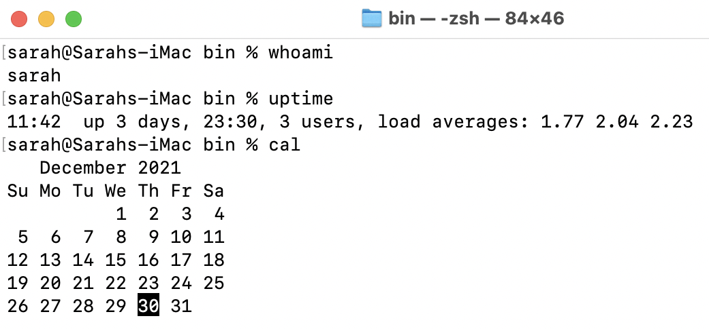
按q退出最后的man命令。
这些命令很多都是旧的，但也有一些新的。 macOS 12增加了一个新的命令来测试你的网络连接。运行这个命令并等待它完成，在我的网络上大约需要30秒：
networkQuality -sv
命令名称是networkQuality，但这个sv是什么？Right-click该命令以打开其手册页面：
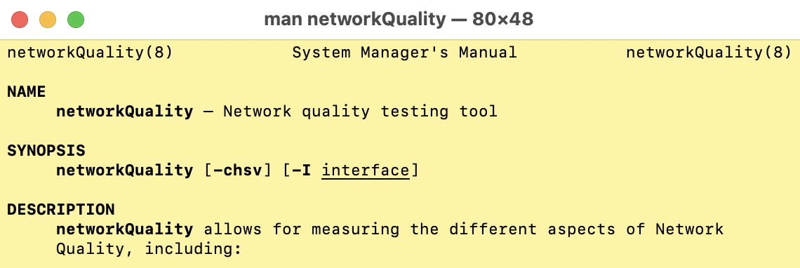
SYNOPSIS列出了几个可选参数。你可以知道它们是可选的，因为它们出现在方括号内。-I参数允许你指定接口，因此，如果你的计算机有多个网络连接，你可以用它来选择要测试的一个。其他选项是四个标志。-c，-h，-s和-v。沿着页面往下看，你可以看到每个选项的作用。实验一下不同的组合，看看你得到什么。
命令行参数总是区分大小写的。networkQuality命令有-C和-c选项，做的事情完全不同。你可以把参数打成一个字，如果手册页面显示是这样的话。在这个例子中，你使用了networkQuality -sv，但是networkQuality -s -v的作用完全一样。
这里有另一个命令，它的参数更多：
ping -c 5 apple.com
运行该命令，然后打开ping的手册页面，看看这些参数是什么。在这种情况下，你不仅仅是打开了一个设置，你还提供了信息。-c参数和它后面的数字，指定了ping服务器的次数。本例中的主机，apple.com，不是可选项。因此，这个命令对苹果服务器进行了五次ping，并报告了获得响应所需的时间。
终端快捷方式¶
这里收集了一些提示，使在终端工作更容易，更有效率。
- 要在任何时候清除终端窗口，按
Command-K。 - 按向上或向下的方向键，循环查看最近使用的命令。当你看到你想使用的命令时，使用
Return。 - 当改变目录时，输入
cd，后面加一个空格，然后从Finder中拖动一个文件夹到终端窗口，插入其路径。 - 当输入一个命令或文件路径时，开始输入，然后按
Tab。终端会试着为你自动完成命令或路径，或者列出可能的候选者。
在Playground上运行命令¶
现在你对终端命令有所了解，是时候回到Xcode，看看如何从那里运行它们。
打开Xcode并选择File ▸ New ▸ Playground…。选择macOS Blank模板并命名为Commands.playground：
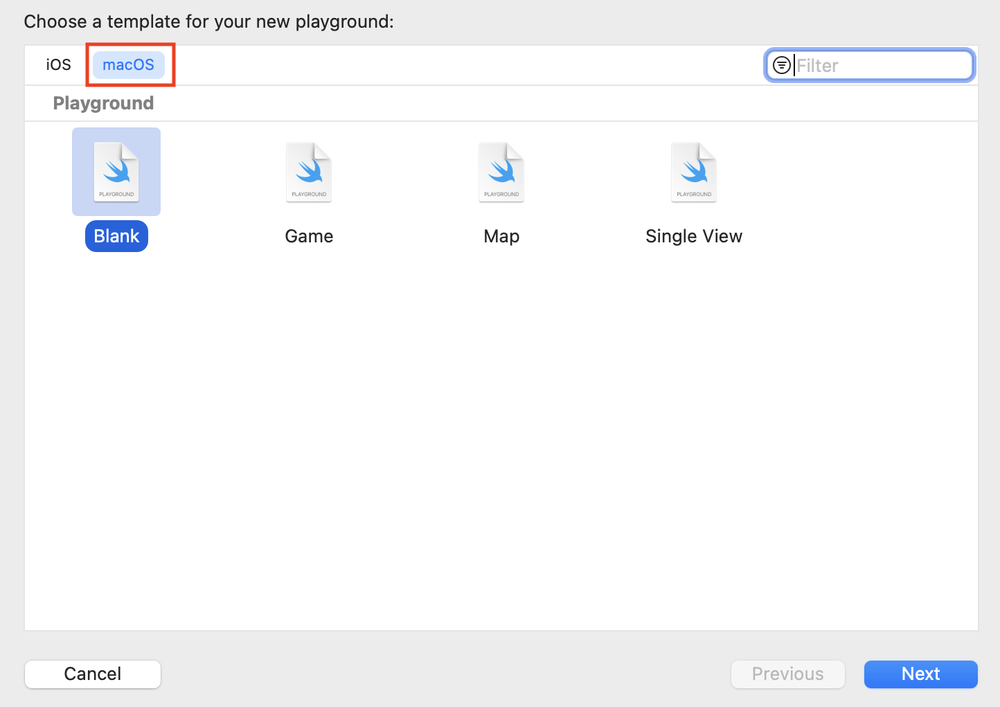
苹果公司提供了一个名为Process的类，用于运行其他程序，如这些终端命令。
Note
Process曾经被称为NSTask，你仍然会看到这个名字被经常使用，包括在一些苹果自己的文档中。
你用一个文件路径的URL来设置Process，以运行它的命令。当你在终端机上运行命令时，你输入命令的名称，例如：whoami。这在Process中不起作用，所以你需要发现命令文件的确切位置。
终端给了我们一个方法来获得这些信息。换回Terminal，使用which命令来定位可执行的命令文件：
which whoami
这个命令返回/usr/bin/whoami，这就是你需要在Process中使用的东西：
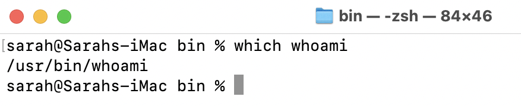
用以下内容取代playground上的内容：
// 1
import Cocoa
// 2
let process = Process()
// 3
process.executableURL = URL(fileURLWithPath: "/usr/bin/whoami")
// arguments go here
// standard output goes here
// 4
try? process.run()
踏过这些线路，你：
- 导入
Cocoa，所以你可以访问Process。 - 创建一个新的
Process。 - 根据你发现的路径，将进程的
executableURL设置为一个文件URL。 - 尝试
run你的Process。
现在运行这个游戏，你会看到你的macOS用户名出现在底部的控制台：
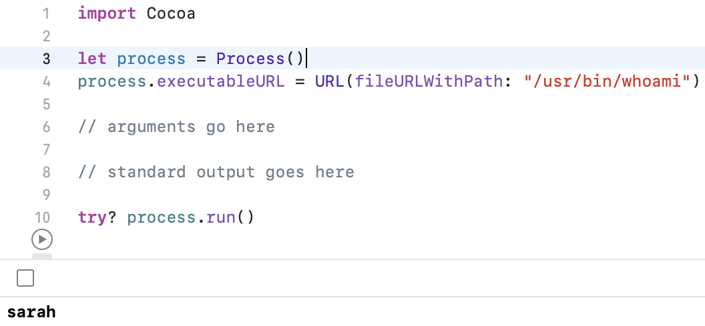
一个名为whoami的命令听起来应该回答一些关于生命的深刻的哲学问题，但它所做的只是告诉你当前登录的用户的名字。:[
你的Process工作了，你的操场可以调用一个终端命令，但结果在哪里？你怎么能把这个结果变成一个字符串，以便你能使用它？
添加一些管道¶
当你运行任何终端命令时，它会打开三个通道：
stdin：标准输入，用于接收数据stdout：标准输出，用于发送数据stderr：标准错误，用于发送错误。
在终端中，这些都默认为终端本身。你在命令行上提供输入，结果或错误也会出现在那里。
在操场上，Process从URL和一个参数数组中获得输入，你将在几分钟后看到。它使用其控制台进行输出和错误处理。但是如果你想对数据做任何事情，你必须设置你自己的standardOutput。
在你的操场上，把// standard output goes here 替换为：
// 1
let outPipe = Pipe()
// 2
let outFile = outPipe.fileHandleForReading
// 3
process.standardOutput = outPipe
有了这个代码，你就可以：
- 创建一个
Pipe来提供进程之间的通信。Pipe的一端连接到你的进程，另一端连接到终端命令。 - 设置一个
FileHandle，这样你就可以读取通过Pipe来的数据。 - 将这个管道指定为进程的
standardOutput。
这为你提供了访问命令输出的机制。接下来你需要从中读取。
将try?process.run()一行替换成这样：
// 1
do {
// 2
try process.run()
process.waitUntilExit()
// 3
if
let data = try outFile.readToEnd(),
let returnValue = String(data: data, encoding: .utf8) {
print("Result: \(returnValue)")
}
} catch {
// 4
print(error)
}
你的变化有什么作用？
- 将代码包裹在一个
do块中，这样你就可以捕捉到任何错误。 - 像以前一样运行这个过程，并等待它完成。
- 然后，从
standardOutput的文件句柄中读取所有数据，将其转换为字符串并打印。 - 如果有问题，打印错误。
再次运行这个游戏，这次你会看到returnValue变量现在包含预期的结果：
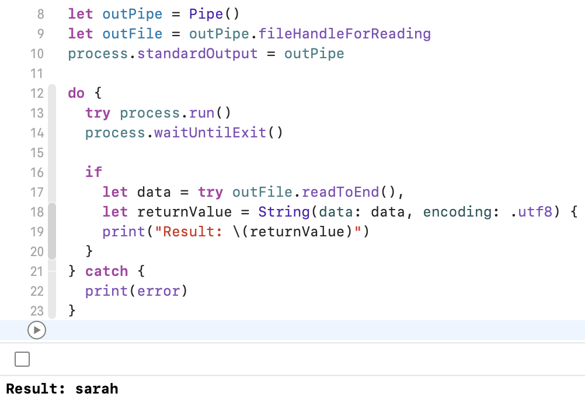
提供参数¶
只有一个更复杂的问题，那就是当一个命令需要更多的输入时。还记得你之前是如何从终端ping苹果的服务器的吗？现在，你将在你的操场上做同样的事情。
第一步是找到ping命令，所以在终端窗口输入which ping以获得完整路径。/sbin/ping。在设置process.executableURL的一行中，将/usr/bin/whoami改为/sbin/ping：
process.executableURL = URL(fileURLWithPath: "/sbin/ping")
接下来，你需要以一个字符串数组的形式提供参数。对于你在Terminal中输入的每一个词，你都要向数组中添加一个单独的字符串。
将// arguments go here替换为：
process.arguments = ["-c", "5", "apple.com"]
在终端，你使用了ping -c 5 apple.com。executableURL被设置为ping命令的完整路径，其他三个词提供了arguments数组中的三个成员。甚至数字参数也必须是一个字符串。
运行这个游戏，大约5秒钟后，你会在控制台看到结果：
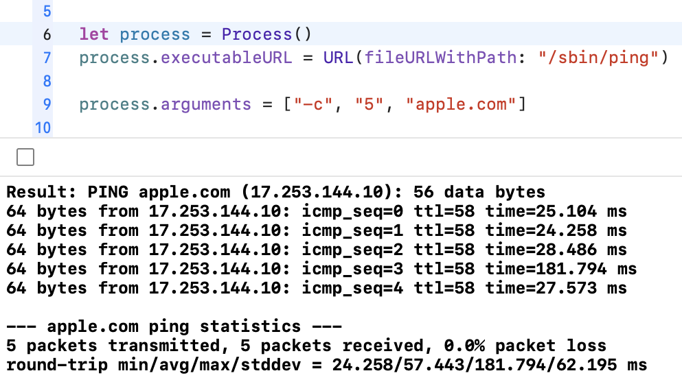
ping命令显然是有效的，但等到最后才看到任何结果，这有点无聊。那么，在数据到达时读取数据呢？
依次读取数据¶
在前面的例子中，你一直等到process结束，然后使用readToEnd()在一个单一的块中获得命令的完整输出。现在，你将使用availableData来读取输出的内容。
首先把这个函数添加到你的playground上，在import Cocoa下面和let process声明上面：
// 1
func getAvailableData(from fileHandle: FileHandle) -> String {
// 2
let newData = fileHandle.availableData
// 3
if let string = String(data: newData, encoding: .utf8) {
return string
}
// 4
return ""
}
一点一点地来：
- 使用这个函数从一个
FileHandle中读取数据。你已经做了一个FileHandle来从standardOutput读取数据。 - 从
FileHandle中获取所有它能获取的数据。 - 然后，尝试将传入的数据转换为字符串并返回。
- 如果有问题，或者没有数据，返回一个空字符串。
要使用这个函数，请将do块的内容替换为：
// 1
try process.run()
// 2
while process.isRunning {
// 3
let newString = getAvailableData(from: outFile)
print(newString.trimmingCharacters(in: .whitespacesAndNewlines))
}
// 4
let newString = getAvailableData(from: outFile)
print(newString.trimmingCharacters(in: .whitespacesAndNewlines))
那么这里发生了什么？
- 开始运行
process，就像你之前做的那样。 - 然后，设置一个
while循环，只要process在运行，就一直运行。 - 在这个循环中，使用新的函数来读取所有可用的输出并打印。
- 当循环结束后，做最后一次检查以获得最后的数据块。
现在运行游乐场，你会看到同样的ping结果出现，但这次你可以在每一行到达后立即读取，这给了用户更好的体验。
寻找命令¶
你可能已经发现了这个系统的一个缺陷。使用终端来寻找每个命令的路径并不是一个好的解决方案。你可以找到所有你需要的路径，然后把它们硬编码到你的代码中，但这听起来很乏味，而且容易出错。以编程方式运行which命令并使用它怎么样？
但是which在哪里？在终端运行which which。感觉这可能会产生某种无限循环，但它会返回which: shell内置命令。有些命令非常重要，它们是shell的一部分，没有单独的文件路径。
那么，什么是shell，你如何以编程方式访问which命令？
shell是创建终端提示符的命令。看看你的终端窗口的标题栏，你会看到一些有趣的信息：
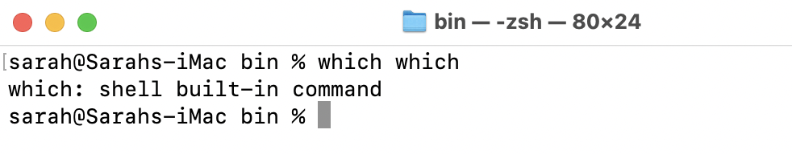
这显示了你：
- 当前的目录。
- 外壳的名称。
- 你的终端窗口的大小，以横排和纵排为单位。
现代版本的macOS使用zsh作为默认的shell，但你也可以使用bash，或者你可能安装了完全不同的东西，如fish。然而，你可以信赖你的Mac安装了zsh。
不管你使用什么shell，在Terminal中运行这个命令，找到zsh：
which zsh
这就得到了/bin/zsh，这就是你要硬编码的一个文件路径。检查zsh的手册页面。滚动到一半，找到标有INVOCATION的部分。这告诉你，你可以使用-c标志来执行下一个参数，就像它是一个普通命令一样。
先在Terminal中试试：
zsh -c "which whoami"
你会得到/usr/bin/whoami，就像你直接运行which whoami时看到的一样。你想让zsh运行的命令在引号内，这样zsh就能把它当作一个参数来识别。
现在你知道这是如何工作的了，回到操场，把设置进程executableURL和arguments的那几行替换成：
process.executableURL = URL(fileURLWithPath: "/bin/zsh")
process.arguments = ["-c", "which whoami"]
运行playground，在控制台看到/usr/bin/whoami。所以现在你有了一个可以用来查找任何可执行命令的路径的技术。而且你知道如何使用zsh来运行which等内置命令。
用函数包装它¶
现在你已经拥有了从你的playground上运行终端命令所需的一切，但在你在应用程序中使用它之前，将它包装成可重用的函数是有意义的。
首先在func getAvailableData(from:)下面和声明process的上面添加这几行：
func runCommand(
_ command: String,
with arguments: [String] = []
) async -> String {
// move all the process code below to here
return ""
}
这设置了一个函数，接收命令路径和一个参数数组。如果没有提供参数，则默认为空数组。这个函数是async，所以它可以在不阻塞主线程的情况下运行，并且它返回一个String。
接下来，选择下面所有其他的代码行，以let process ...开始，以catch闭包结束。然后按Option-Command-[足够多次，将所有这些代码移到runCommand(_:with:)的正文中，在默认的return ""上面。
现在，为了使用你的函数的参数，将process配置行替换为：
process.executableURL = URL(fileURLWithPath: command)
process.arguments = arguments
这将使进程使用提供的命令路径和参数，而不是硬编码的值。
然后，将do块的内容替换为：
try process.run()
var returnValue = ""
while process.isRunning {
let newString = getAvailableData(from: outFile)
returnValue += newString
}
let newString = getAvailableData(from: outFile)
returnValue += newString
你不是在每一行到达时打印，而是将其合并为一个returnValue字符串。
现在，仍然在do块中，添加这些行来返回这个字符串：
return returnValue
.trimmingCharacters(in: .whitespacesAndNewlines)
终端命令总是返回带有尾部换行的字符串，所以在返回returnValue之前，你要将这些字符串和任何多余的空格剥离出来。
你不再能看到输出的内容，但是当你把这些内容编入一个应用程序时，你会看到如何再次启用这些内容。
如果出现问题，do-catch代码外的return会返回一个空字符串。
现在你已经有了一个可重复使用的函数，可以调用终端命令。
这是一个运行任何命令的通用函数，但如果有一个更专门的函数来查找任何命令的可执行文件的路径，那就很有用了。
把这个添加到playground的末尾：
func pathTo(command: String) async -> String {
await runCommand("/bin/zsh", with: ["-c", "which \(command)"])
}
这使用runCommand(_:with:)来运行zsh，并让它使用which找到提供的命令的路径。
现在，把这一切放在一起，把这段代码添加到你的playground：
// 1
Task {
// 2
let commandPath = await pathTo(command: "cal")
// 3
let cal = await runCommand(commandPath, with: ["-h"])
print(cal)
}
这个代码：
- 将
async函数调用包含在Task块中，因此你可以await其结果。 - 获取到
cal命令的路径。 - 运行命令并打印出结果。
-h标志关闭了今天的日期的加粗，因为这在纯文本中显示得并不好。
运行playground可以看到当前月份的日历的打印结果。
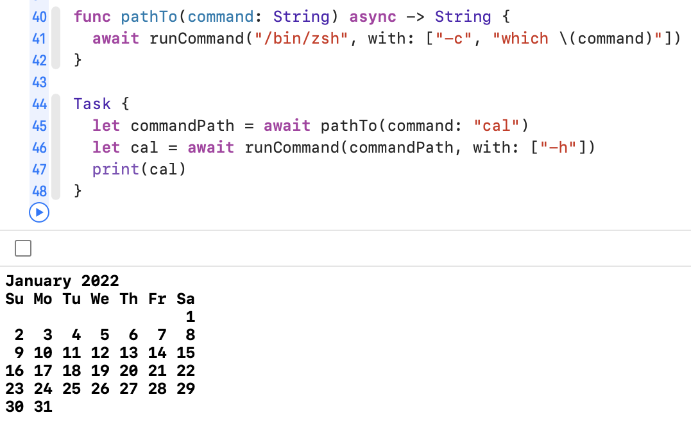
一旦你测试了这个命令，注释掉Task块。你将会运行其他的命令，但你可以把它留在原处作为一个指导。
处理图像¶
你将建立一个名为ImageSipper的应用程序，它将使用sips或scriptable image processing system命令。
在Terminal中输入sips并按Return键，可以看到一些帮助。Right-click这个词，打开它的手册页面，以获得更多信息。那里有很多细节，但遗憾的是，没有例子。这是一个强大的工具，你可以编辑单个图像文件或批量处理多个图像。但它并不容易使用，而且绝对不容易记住语法，所以增加一个用户界面将使它更有用处。
首先，你要在操场上测试一些sips命令。在最后添加这一行：
let imagePath = ""
现在，你需要在这一行的引号之间插入一个图像文件路径。
在本章的下载材料中，assets文件夹中包含一个名为rosella.png的样本图片。Right-click该文件，按住Option并选择Copy “rosella.png” as Pathname：
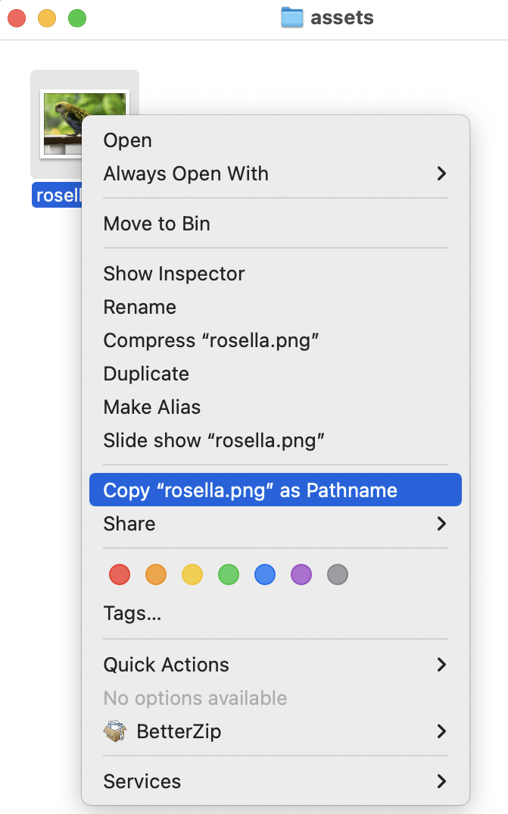
回到你的playground，把这个复制的文件路径粘贴到let imagePath行的引号之间。
这就为你提供了一个图像的文件路径。在iOS和macOS应用程序中，你习惯于使用URL来处理文件，但终端命令都是基于文本的，所以你需要将文件路径作为String。
接下来，你必须找到sips命令的路径，所以在下面添加这个：
Task {
let sipsPath = await runCommand("/bin/zsh", with: ["-c", "which sips"])
// sips commands here
}
最后，你准备运行你的第一个sips命令。将// sips commands here替换为：
// 1
let args = ["--getProperty", "all", imagePath]
// 2
let imageData = await runCommand(sipsPath, with: args)
print(imageData)
而这一切是什么呢？
sips有一个叫--getProperty的参数，从图像文件中读取数据。你可以在它后面加上你想得到的特定属性的名称，但是使用all可以使它返回sips可以读取的所有信息。数组中的第三个字符串告诉sips要使用哪个图像文件。- 用这些参数运行
sips命令，并将结果打印到控制台。
运行playground，你会看到一个关于图像的信息列表：
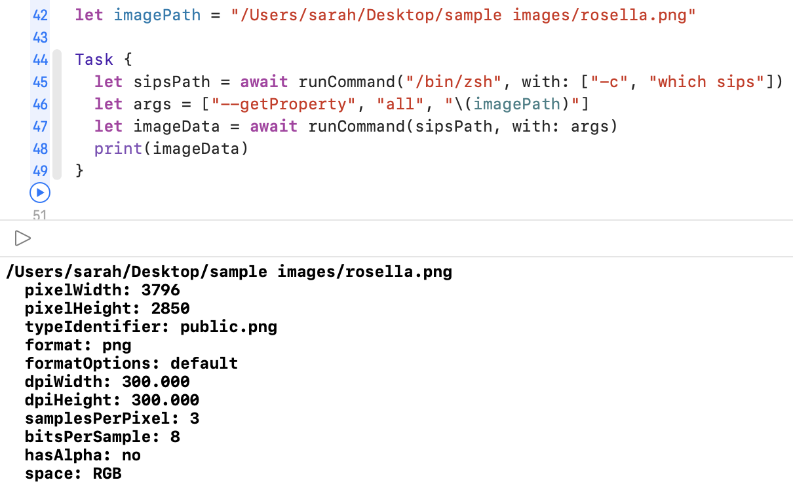
缩小图像¶
这是一个很大的图像，从刚才的数据中可以看出，所以你要用sips来做一个较小的拷贝。为了不覆盖原始文件，你将提供一个新的文件路径。
复制带有原始文件路径的那一行。将变量名改为imagePathSmall，文件名的最后部分改为rosella_small.png，所以你最后的结果是这样的：
let imagePath = "/path/to/folder/rosella.png"
let imagePathSmall = "/path/to/folder/rosella_small.png"
你可以用sips来改变图片的高度和宽度，但也有一些选项允许你只改变一个维度，而让另一个维度自动改变以保持相同的长宽比。你会减少宽度，高度也会随之调整。
在Task块内的最后一条命令下面，添加这几行：
let resizeArgs = [
// 1
"--resampleWidth", "800",
// 2
imagePath,
// 3
"--out", imagePathSmall
]
// 4
let output = await runCommand(sipsPath, with: resizeArgs)
print("Output: \(output)")
这个代码是做什么的？
- 设置参数数组。第一个参数说将图像的宽度调整为
800像素。 - 下一个元素提供原始图像文件的路径。
- 参数数组的第三部分告诉
sips将编辑好的图像保存到新的文件路径。如果你忽略了这一点，编辑后的图像将覆盖原始文件。 - 最后，运行该命令并将输出打印到控制台。
现在运行playground。控制台再次显示原始图像的数据，然后是调整大小操作的输出，也就是原始文件路径，后面是新的文件路径。
在Finder中，查看这两个图像文件。检查Finder的预览，或者按Command-I来获取Get Info rosella_small.png的信息，你会看到它的尺寸是800 x 600像素，从3796 x 2850下降：
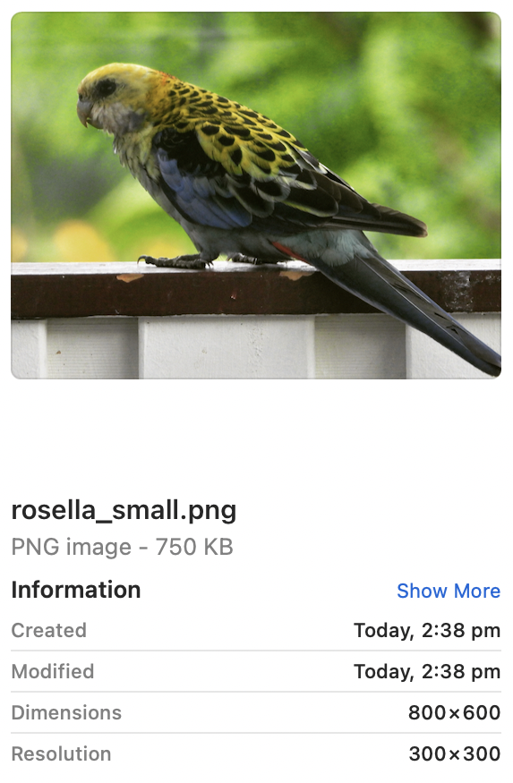
计算长宽比，2850 / 3796 = 0.751，而600 / 800 = 0.75，所以高度和宽度的比例几乎没有变化。
格式化参数¶
回到sips的手册页面。在FUNCTIONS部分的第一个条目是-g或-getProperty。你会在许多终端命令中看到这种模式，其中有一个参数的简短形式和一个长的形式。传统上，一种形式有两个前导破折号，另一种形式只有一个。
当你直接在终端中输入时，短的形式更有意义，但在编写像这样的实用程序时，情况就不是这样了。
在应用程序中调用命令时，总是使用较长的形式。你只需要输入一次，而且当你以后回到这里时，或者当其他人必须阅读它时，它使你的代码更容易阅读和理解。
挑战¶
挑战1：使用另一个终端命令¶
挑选另一个终端命令，在playground上运行它。使用pathTo(command:)找到命令的位置，然后使用runCommand(_:with:)获得其结果。
不要忘了用Task块来包装你的函数调用，这样它们就可以异步运行。
挑战2：旋转或翻转样本图像¶
你可以用sips来翻转或旋转图像。你在终端中使用的语法是：
sips --rotate 90 rosella.png --out rosella_rotated.png
sips --flip vertical rosella.png --out rosella_flipped.png
转换这些命令以在你的playground上运行。测试不同的旋转角度，尝试水平和垂直翻转。
试着自己解决这个问题，但如果你被卡住了，可以在本章的challenge文件夹中的playground看看。
关键点¶
macOS是建立在Unix之上的，它包含了很多实用的命令，你可以通过终端访问。这些命令通常有晦涩难懂的语法，很难记住。- 你在
Swift中使用Process来运行这些命令。 - 要在
进程中运行一个命令，你必须找到该命令的文件路径。这些命令是可执行文件，深埋在你系统的隐藏文件夹中。 - 为了读取
Process命令的结果，你需要一个带有Pipe和FileHandle的自定义standardOutput。
从这里开始，该往哪里走？¶
你现在对终端命令有了很好的了解，知道了如何在终端中运行它们，以及如何阅读它们的手册页面。你已经学会了如何playground上使用Swift来运行这些命令，而且你已经开始了解如何使用sips命令来编辑图像文件。
在下一章中，你将利用所有这些知识，创建一个Mac应用程序，为sips命令的力量提供一个简单的接口。